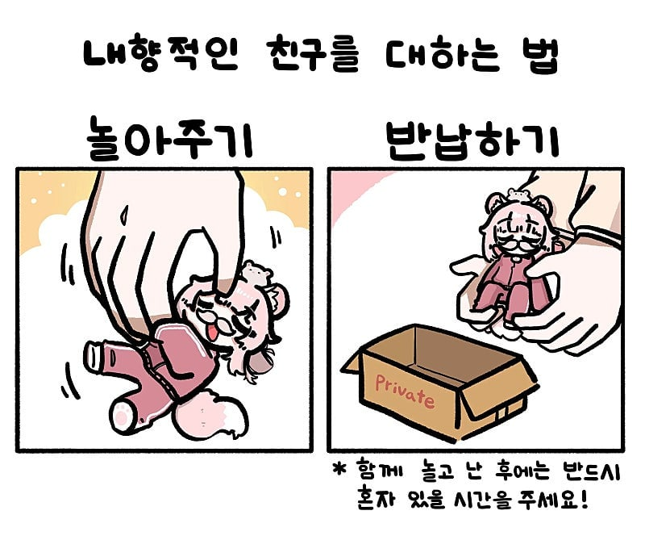

내향인 다루는 방법
댓글
딱아줄필요는없네
외향인을 무발기사정시키는 마법의 주문
"나 진짜 이런 말 어디 가서 거의 안 하는데... 너랑 같이 놀면 마음이 편해."
이제 혹시 잘못하면 나에대해품고있는 기대를 실망시키겠지 하는 부담감에 짓눌림
아 집에 가서 혼자있고 싶은데 이러면 집에 간다고 하기 힘들잖아!!
???:편하다며 빨리 나와
"그런데 너에게는 난 그정도는 아닐까봐 지금까지 말을 못했었어"
이정도면 거의 프로포즈나 다름없다
아하 밤새놀다가 아침에보내주고 저녁에 다시꺼내오면되는거지??
큭 죽여라
충분히 쉬었지? 가자
2차 갈래?
절망 디스펠
이제 슬슬 자리 마무리될쯤에
야 우리 내일은 ㅇㅇ하자
다른 친구 소개시켜주기
합석시키고 자리비우기
그 친구도 내향인이면 완벽
??: 우리 저기서 커피 한 잔하고 집에 가자
새벽뷰터 아침까지 같에 놀고 낮동안 반납한다음에 밤에 다시 꺼내가서 새벽까지 놀면 되는건가..?
얘들아! 개붕이가 할말 있대!
와씨 개웃기네 ㅋㅋㅋ 개붕아 방금 나한테 한 얘기 얘네들한테 해줘봐 ㅋㅋㅋ
얘는 내 친구 개붕일이야 나 잠깐 일좀 보고 올테니 서로 대화좀 나누고 있어!
친구랑 같이 아침부터 같이 놀고 점심먹고 집 들어가서 쉬다가 저녁 또 먹자하니까 세상 다잃은 표정으로 절망하더라
근데 하루에 두번 나오는게 그렇게 힘든가? 아직 20대초 인데
좀 더 가면 연락처차단됨 ㅅㄱ
난 나가려면 마음의 준비가 필요한데 집앞이라고 불러내면 많이 힘드러...
막상 놀때는 또 재밌게 놈 ㅋㅋㅋ
??: 아하 그러면 충전시키러 같이 집에 가서 놀다가 또 데리고 나가야지
제때 반납 안해주면 다음 만남 성사율이 급락함
오나홀이랑 비슷하네